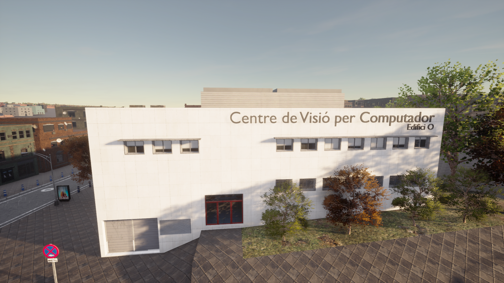
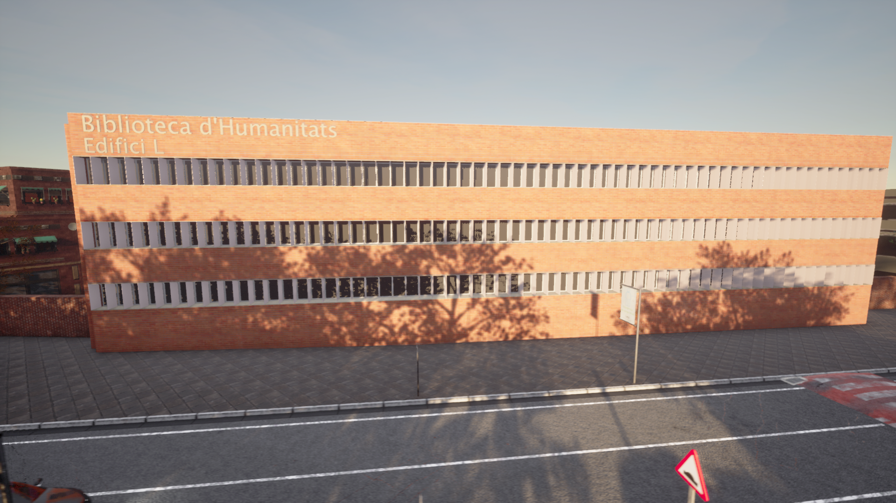
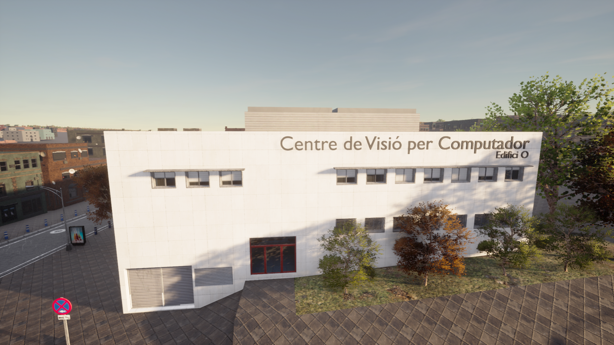
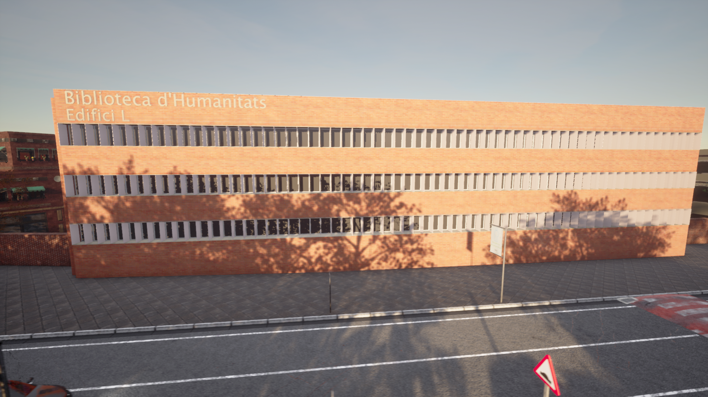

城镇 15

城镇 15 是根据巴塞罗那自治大学的道路布局绘制的地图。地图中仿真了现代校园的一些标志性建筑，包括人文图书馆、医学大楼以及 Carla 的诞生地计算机视觉中心。
计算机视觉中心
该地图包括计算机视觉中心，该中心是世界知名的计算机视觉研究中心，也是 Carla 开发团队的所在地。

人文图书馆
这座建筑在加泰罗尼亚语中被称为 Biblioteca d'Humanitats，为在巴塞罗那自治大学学习和工作的学生和研究人员提供了涵盖多个学科的文献。

城镇 15 是根据巴塞罗那自治大学的道路布局绘制的地图。地图中仿真了现代校园的一些标志性建筑，包括人文图书馆、医学大楼以及 Carla 的诞生地计算机视觉中心。
该地图包括计算机视觉中心，该中心是世界知名的计算机视觉研究中心，也是 Carla 开发团队的所在地。

这座建筑在加泰罗尼亚语中被称为 Biblioteca d'Humanitats，为在巴塞罗那自治大学学习和工作的学生和研究人员提供了涵盖多个学科的文献。
